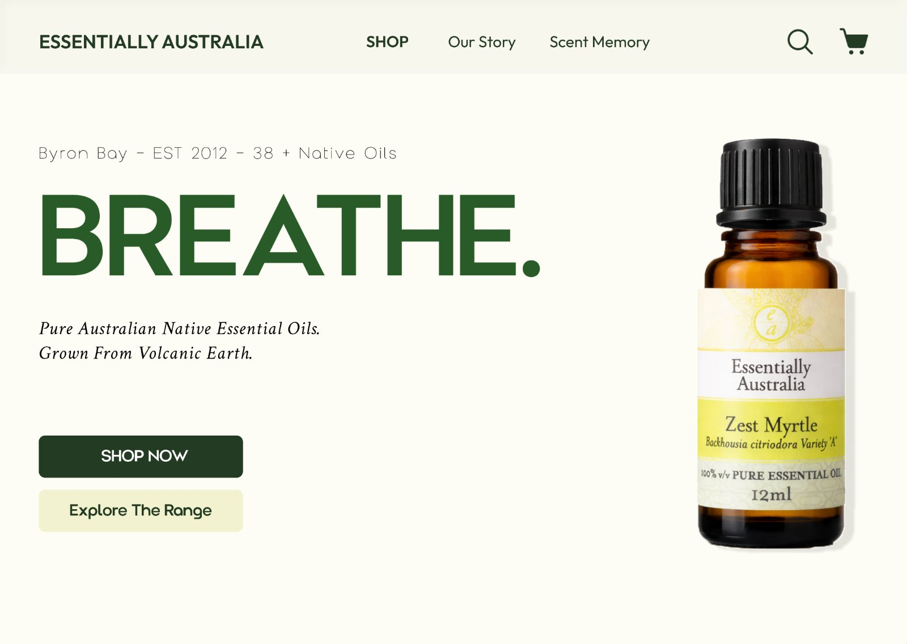

Essentially Australia.
A Byron Bay essential oils store with a broken purchase path. Audited against four competitors, then redesigned around how people want to feel.
Shop by feeling
From friction to guided.
Essentially Australia is a Byron Bay native essential oils brand, est. 2012, with 38+ oils sourced from Australian botanical ingredients. Their WordPress store had broken information architecture, invisible CTAs, a blank hero, and a purchase path that made testers give up.
I audited four competing Australian essential oil sites, identified Essentially Australia as the highest-friction one, and redesigned the entire purchase experience on mobile and desktop.
“I’m actually gonna suffer.”
Tester / Cognitive walkthrough

Desktop homepage / 1440 × 1024Product first, one primary action, Scent Memory in the nav
Eight steps, then four.
Half the steps, with feedback on every action that remains.
Friction at every step.
The original site failed at every stage of the purchase journey, from a hero that showed a lighthouse instead of a product, to a cart that silently accepted wrong orders.
The redesign navigates by feeling, not by botanical names people don’t know: Uplift, Calm, Restore, Ground. Colour is read before the label is.
Broken IA
Oils, gift vouchers and oracle cards at equal weight. No hierarchy.
Feeling-first IA
Colour dots read before labels. The expert tester chose feeling navigation over search.
Silent cart
Items added with zero feedback. Users repeated actions, assuming failure.
Confirmed add
The button becomes “Successfully added”, the cart count increments, duplicates are prevented.
Manual cart update
Quantity changes needed an extra click. Users checked out wrong orders.
Live price sync
Pick 25ml and the button reads $38.95. Selection and cost always match.
No hero intent
A lighthouse. No product, no CTA, no value.
Scent Memory
A conversational AI concept that maps how you feel to a product. No botanical knowledge needed.
2.85:1 to AAA.
Left: the original contrast, which fails WCAG AA. Right: the redesign, carbon on porcelain. Drag to compare.
scent.
Native Australian essential oils, sourced from botanical ingredients in Byron Bay.
scent.
Native Australian essential oils, sourced from botanical ingredients in Byron Bay.
Six steps.
- 01
UX audit / visual forensics
Analysed 4 Australian essential oil sites across 7 elements: typography, grid, visual hierarchy, colour, WCAG, dark patterns, responsive breaks. Verified contrast ratios in DevTools.
- 02
Heuristics + cognitive walkthrough
Applied 6 of Nielsen’s heuristics across all 4 sites. Ran a think-aloud walkthrough: “Find a food grade pepper oil, check sizes, add to cart.” 5 friction moments recorded.
- 03
Moodboard + art direction
Three directions: Botanical (chosen), Brutalist, Swiss Grid. Palette taken from Byron Bay’s volcanic hinterland. Colour carries the navigation: Uplift, Calm, Restore, Ground.
- 04
Wireframes / dual-path IA
Two purchase paths: Browse (by feeling) and Search (by keyword). Five layouts sketched before committing. Hero → Product list → Filter → Product → Cart → Checkout.
- 05
Hi-fi prototype
Interactive Figma prototypes at 390×844 and 1440×1024. Full purchase flow with system feedback, feeling navigation, WCAG AA type.
- 06
Usability testing + iteration
Think-aloud with a UX designer (3+ years). 3 of 3 tasks completed. 1 friction found: the food grade filter was buried. Promoted it to its own chip.
Mobile + desktop.
What changed.
- Purchase path8 steps → 4 steps
- WCAG complianceFail → AA verified
- Usability testing3 / 3 tasks completed
- Friction points1 found, resolved
- Feeling-first IAValidated by expert
- Scent MemoryGenAI feature proposed
“Emotion-first IA proved more effective than initially anticipated.”
Reflection